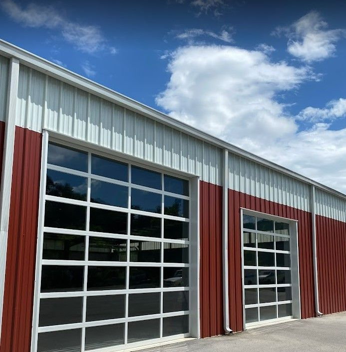
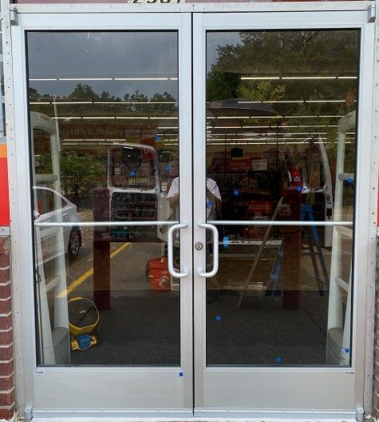

Open 24/7/365
We operate 24 hours a day, 7 days a week, including holidays, so help is a phone call away when a door fails.
Garage doors, storefronts, automatic doors, locks and emergency board-up for homes and businesses. One call to American 24 Hour Door Service gets a fully equipped technician on the way.
When a door fails, your home or business is exposed. Here’s why property owners across Tennessee call us first.
We operate 24 hours a day, 7 days a week, including holidays, so help is a phone call away when a door fails.
Fully equipped service vehicles carry the tools and parts to fix most doors on the spot, often the same day.
One call covers locks, glass, storefront, overhead, garage and automatic doors, so you don’t juggle contractors.
From a homeowner’s garage spring to a storefront on the Parkway, we handle both.
You know the cost before we begin any work. No hidden fees, no surprises.
After a break-in, storm or vehicle impact, we secure the opening fast and provide documentation for your insurance claim.


Reach us 24/7 at (800) 780-6665 and tell us what’s wrong and where you are.
A technician in a fully stocked vehicle is sent your way, often within three hours.
We diagnose the problem and explain the fix and cost before work begins.
Most repairs are done on the spot, and we test everything before we leave.
American 24 Hour Door Service · 4116 Bent Rd, Kodak, TN 37764 (Sevier County)
Statewide service from our East Tennessee headquarters, east to west.
Serving Tennessee and neighboring states including Georgia, North Carolina, Virginia, Kentucky, Alabama and Mississippi.
A few of the brands we work with regularly. Our technicians service most major makes and models.
Read reviews of American 24 Hour Door Service on Google, or leave one after your service.
Yes. We operate 24 hours a day, 7 days a week, including holidays. Call (800) 780-6665 any time and a technician will be dispatched. Regular office hours are Monday–Friday, 8:00 am–5:00 pm; emergency rates apply after hours.
Our technicians are dispatched by phone from fully equipped service vehicles and can often be on site within three hours of your call, depending on your location and call volume.
Yes. We handle residential garage doors, openers and entry doors, plus commercial storefronts, automatic and ADA doors, hollow metal doors, rolling steel doors and security gates.
Yes. We provide emergency board-up to secure broken glass, doors and storefronts until permanent repairs are made, and we can provide documentation to support your insurance claim.
We repair all major types of garage doors, including sectional, roll-up, tilt-up and custom doors, and we work on a wide range of brands and opener systems.
We serve the entire state of Tennessee, East, Middle and West, from our headquarters in Kodak (Sevier County), near Sevierville. We also work in neighboring states including Georgia, North Carolina, Virginia, Kentucky, Alabama and Mississippi. Call (800) 780-6665 to confirm service at your location.
Yes. Preventative maintenance programs help extend the life of your doors by inspecting components, lubricating moving parts, tightening hardware and catching problems before they become costly repairs.
Call now. A technician is on call 24 hours a day, 7 days a week, including holidays.